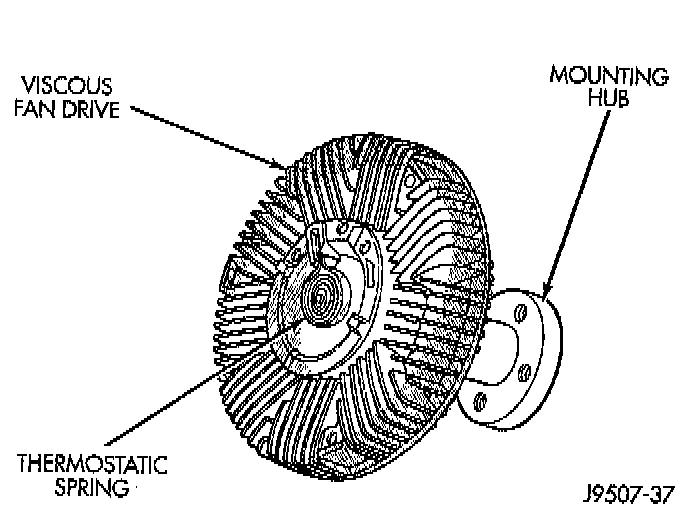

Fan Clutch: Description and Operation

PURPOSE
The thermal viscous fan drive is a silicone-fluid-filled coupling used to connect the fan blades to the water pump shaft. The coupling allows the fan to be driven in a normal manner. This is done at low engine speeds while limiting the top speed of the fan to a predetermined maximum level at higher engine speeds.
DESCRIPTION
A thermostatic bimetallic spring coil is located on the front face of the viscous fan drive unit. This spring coil reacts to the temperature of the radiator discharge air. It engages the viscous fan drive for higher fan speed if the air temperature from the radiator rises above a certain point. Until additional engine cooling is necessary, the fan will remain at a reduced rpm regardless of engine speed.
OPERATION
Only when sufficient heat is present, will the viscous fan drive engage. This is when the air flowing through the radiator core causes a reaction to the bimetallic coil. It then increases fan speed to provide the necessary additional engine cooling. Once the engine has cooled, the radiator discharge temperature will drop. The bimetallic coil again reacts and the fan speed is reduced to the previous disengaged speed.
CAUTION:
^ Engines equipped with serpentine drive belts have reverse rotating fans and viscous fan drives. They are marked with the word REVERSE to designate their usage. Installation of the wrong fan or viscous fan drive can result in engine overheating.
^ If the viscous fan drive is replaced because of mechanical damage, the cooling fan blades should also be inspected. Inspect for fatigue cracks, loose blades, or loose rivets that could have resulted from excessive vibration. Replace fan blade assembly if any of these conditions are found. Also inspect water pump bearing and shaft assembly for any related damage due to a viscous fan drive malfunction.
NOTE: It is normal for fan noise to be louder (roaring) when:
^ The underhood temperature is above the engagement point for the viscous drive coupling. This may occur when ambient (outside air temperature) is very high.
^ Engine loads and temperatures are high such as when towing a trailer.
^ Cool silicone fluid within the fan drive unit is being redistributed back to its normal disengaged (warm) position. This can occur during the first 15 seconds to one minute after engine start-up on a cold engine.
LEAKS
Viscous fan drive operation is not affected by small oil stains near the drive bearing. If leakage appears excessive, replace the fan drive unit.